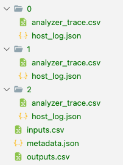

Data Logging¶
Labbench provides several data logging capabilities oriented toward experiments that involve complex sweeps or test conditions. Their general idea is to automatically log small details (device parameters, test conditions, git commit hashes, etc.) so that automation code is focused on the test procedure. The resulting logging system makes many implicit decisions but attempts describe the resulting structure clearly:
Automatic logging of simple scalar parameters of
labbench.Deviceobjects that are defined withlabbench.paramattrManual logging through simple dictionary mapping
Consistent and automatic mapping from non-scalar types (
pandas.DataFrame,numpy.array(), long strings, files generated outside the data tree, etc.)Support for several output data types:
labbench.CSVLoggerandlabbench.SQLiteLogger
Example: Logging Device objects¶
To get started, consider a simple loop:
import numpy as np
import labbench as lb
from labbench.testing.pyvisa_sim import SpectrumAnalyzer, PowerSensor
lb.visa_default_resource_manager('@sim-labbench')
lb.show_messages('info')
sensor = PowerSensor()
analyzer = SpectrumAnalyzer()
db = lb.CSVLogger(path=f"./{np.random.bytes(8).hex()}")
db.observe_paramattr([sensor, analyzer])
with sensor, analyzer, db:
for freq in (5.8e9, 5.85e9, 5.9e9):
analyzer.center_frequency = freq
sensor.frequency = freq
sensor.trigger()
analyzer.trigger()
data = {
'analyzer_trace': analyzer.fetch(),
'sensor_reading': sensor.fetch()[0],
}
db.new_row(data)
INFO 2024-02-21 08:56:49,641.642 • aggregator: PowerSensor() named 'sensor' by introspection
INFO 2024-02-21 08:56:49,644.644 • aggregator: SpectrumAnalyzer() named 'analyzer' by introspection
INFO 2024-02-21 08:56:51,641.642 • aggregator: CSVLogger('6c03b9e2019bc827') named 'db' by introspection
---------------------------------------------------------------------------
ValueError Traceback (most recent call last)
Cell In[1], line 27
20 analyzer.trigger()
22 data = {
23 'analyzer_trace': analyzer.fetch(),
24 'sensor_reading': sensor.fetch()[0],
25 }
---> 27 db.new_row(data)
Cell In[1], line 24
19 sensor.trigger()
20 analyzer.trigger()
22 data = {
23 'analyzer_trace': analyzer.fetch(),
---> 24 'sensor_reading': sensor.fetch()[0],
25 }
27 db.new_row(data)
File ~/Documents/src/labbench/src/labbench/testing/pyvisa_sim.py:64, in PowerSensor.fetch(self)
61 response = self.query('FETC?')
63 if self.trigger_count == 1:
---> 64 return float(response)
65 else:
66 return pd.Series([float(s) for s in response.split(',')], name='spectrum')
ValueError: could not convert string to float: '-52.617,-52.373,-52.724,-51.893,-52.27,-52.047,-53.059,-52.053,-52.426,-52.343,-52.228,-52.976,-52.186,-53.0,-51.894,-53.18,-51.96,-52.326,-52.492,-52.871,-52.41,-53.111,-53.199,-52.907,-52.791,-52.68,-51.63,-51.679,-51.743,-52.613,-52.108,-53.138,-52.014,-52.289,-52.235,-52.26,-53.135,-52.503,-52.201,-51.633,-51.933,-52.82,-52.287,-52.594,-51.89,-52.371,-52.068,-51.888,-53.145,-53.085,-52.392,-52.064,-51.688,-52.188,-52.211,-52.226,-52.841,-51.951,-51.573,-51.521,-52.115,-52.302,-52.958,-52.503,-52.32,-52.81,-52.357,-51.729,-52.956,-52.849,-51.883,-51.505,-52.027,-52.234,-52.092,-51.446,-52.798,-51.601,-52.14,-51.477,-52.614,-52.291,-52.532,-52.861,-51.814,-51.821,-52.997,-53.184,-51.761,-53.052,-51.612,-52.876,-52.013,-52.252,-52.059,-52.806,-52.474,-51.689,-52.606,-51.924,-51.964,-51.601,-52.815,-53.172,-52.183,-53.071,-52.763,-52.999,-52.595,-52.463,-52.48,-52.701,-52.337,-51.778,-52.039,-51.493,-51.591,-51.654,-51.525,-52.925,-51.531,-53.169,-52.997,-52.519,-52.298,-52.078,-52.547,-51.518,-51.589,-51.567,-51.502,-51.984,-52.215,-52.681,-51.468,-53.197,-53.007,-51.929,-52.465,-53.132,-52.073,-51.75,-52.8,-52.054,-52.493,-51.605,-53.026,-52.28,-52.331,-52.109,-51.889,-52.878,-51.874,-51.801,-52.031,-52.625,-51.84,-53.029,-52.431,-51.655,-52.51,-52.431,-52.165,-52.009,-51.973,-53.042,-52.632,-51.754,-52.637,-51.757,-51.9,-52.775,-52.49,-52.022,-52.151,-52.05,-51.867,-52.494,-53.014,-52.14,-53.036,-51.799,-51.848,-51.996,-52.254,-52.75,-51.492,-51.755,-52.494,-53.193,-53.114,-53.028,-52.898,-52.992,-53.127,-51.752,-53.065,-52.585,-51.861,-51.596'
Output data structure¶
Experimental results are populated as follows in a directory at the given path:

The root table in outputs.csv gives the high level test conditions and results:
import pandas as pd
root = pd.read_csv(f'{db.path}/outputs.csv')
root
This points us at scalar test conditions and results, and paths to paths to files containing for non-scalar data (arrays, tables, etc.) and long text strings. Examples here include the measurement trace from the spectrum analyzer (column 'analyzer_trace.csv'), and the host log JSON file ('host_log'). For example:
pd.read_csv(f"{db.path}/{root['analyzer_trace'][0]}")
import json
with open(f"{db.path}/metadata.json", 'r') as stream:
metadata = json.load(stream)
# metadata['device_objects']
metadata['field_name_sources']
For a more systematic analysis to analyzing the data, we may want to expand the root table based on the relational data files in one of these columns. A shortcut for this is provided by labbench.read_relational():
lb.read_relational(
f'{db.path}/outputs.csv',
# the column containing paths to relational data tables.
# the returned table places a .
'analyzer_trace',
# copy fixed values of these column across as columns in each relational data table
['sensor_frequency', 'sensor_reading']
)
For each row in the root table, the expanded table is expanded with a copy of the contents of the relational data table in its file path ending in 'analyzer_trace.csv'.
import labbench as lb
from labbench.testing.pyvisa_sim import SpectrumAnalyzer, PowerSensor, SignalGenerator
import numpy as np
from shutil import rmtree
FREQ_COUNT = 3
DUT_NAME = "DUT 63"
DATA_PATH = './data'
# the labbench.testing devices support simulated pyvisa operations
lb.visa_default_resource_manager('@sim-labbench')
class Testbed(lb.Rack):
sensor: PowerSensor = PowerSensor()
analyzer: SpectrumAnalyzer = SpectrumAnalyzer()
db: lb.CSVLogger = lb.CSVLogger(path=DATA_PATH)
def open(self):
# remove prior data before we start
self.db.observe_paramattr(self.analyzer)
self.db.observe_paramattr(self.sensor, always=['sweep_aperture'])
def single(self, frequency: float):
self.analyzer.center_frequency = frequency
self.sensor.frequency = frequency
self.sensor.trigger()
self.analyzer.trigger()
return dict(
analyzer_trace=self.analyzer.fetch(),
sensor_reading=self.sensor.fetch()[0]
)
rmtree(Testbed.db.path, True)
with Testbed() as rack:
for freq in np.linspace(5.8e9, 5.9e9, FREQ_COUNT):
rack.single(freq)
# this could also go in single()
rack.db.new_row(
comments='try 1.21 GW for time-travel',
dut = DUT_NAME,
)